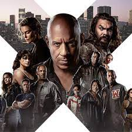

História
A trama de Velozes e Furiosos acompanha Brian O' Connor, um policial que se infiltra nas corridas de carro ilegais para prender o criminoso Dominic Toretto. Suas ações, no entanto, mudam de direção quando ele se apaixona pela irmã de Dominic, pelas corridas e pelo grupo de amigos que faz.
“Não importa onde você esteja, a um quilômetro de distância ou do outro lado do mundo, você sempre estará comigo. E sempre será meu irmão”.
O objetivo é não se desviar, permanecer firme nas próprias convicções, mesmo nas situações mais difíceis. Dom, por exemplo, organiza a sua vida e seus objetivos como marcos. Isso significa que dentro de cada grande objetivo há objetivos mais modestos que nos aproximam dele.
Personagens

Dominic Toretto
Um homem com fortes princípios e valores familiares, Dominic começou a carreira criminal roubando caminhões para sustentar sua família.
Letty
Mia Toretto é irmã de Dominic Toretto e Jakob Toretto, namorada de Brian O'Conner e mãe de seus dois filhos.
Han
Ele é dono de um restaurante chamado Saketini em Los Angeles. Kang diz que antes de ser escalado como Han em Velozes e Furiosos.
Brian O'Conner
Sua personalidade carismática e equilibrada muitas vezes contrasta com o comportamento agressivo de Toretto.
Letty Ortiz
Aquela professora que todos têm como carrasco, tornando a sala silenciosa após a aula de Roman terminar. Durona como sua personagem nos filmes, ela geraria terror por toda a escola.